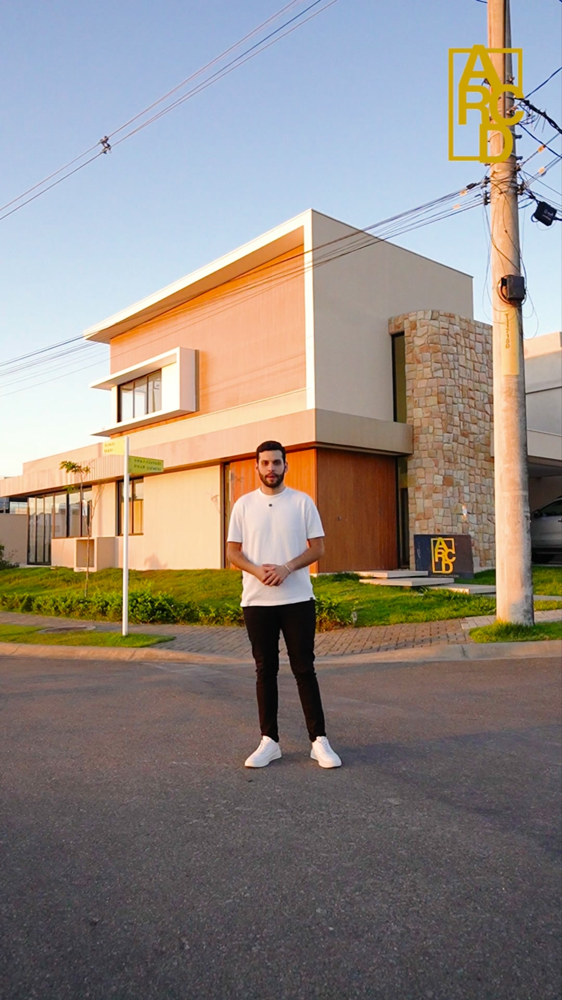
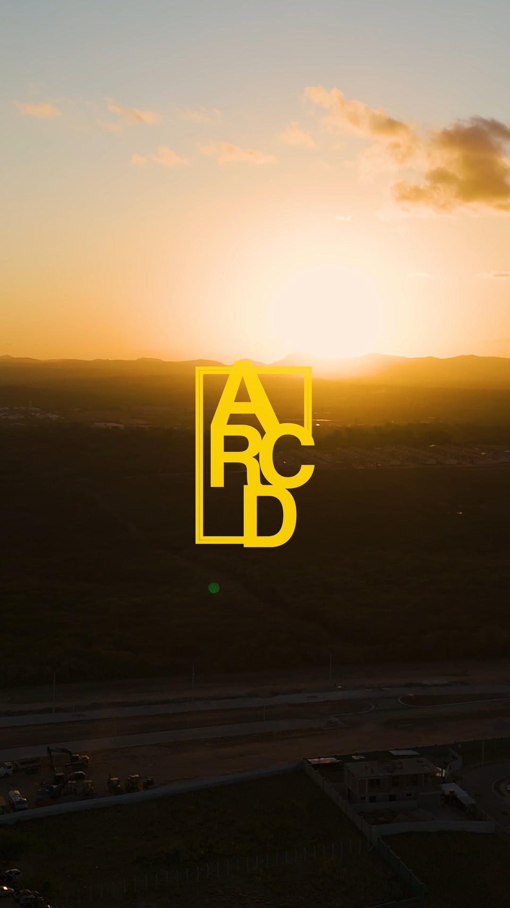

Sua casaem Caruaru,do projeto à obra.
Arquitetura, engenharia e construção de alto padrão.
Converse sobre seu terreno, o projeto da sua casa
ou as residências apresentadas pela ARCD.
Qual é o seu
próximo passo?
Uma casa pensada
para sua rotina.
Sua rotina é o ponto de partida: os ambientes de que precisa, como recebe as pessoas e o que espera da sua casa.
A ARCD Construtech atua com arquitetura, engenharia e gestão de obras em Caruaru. A conversa começa pelas suas necessidades e pelas características do terreno. A partir daí, alinhamos o serviço desejado: desenvolver o projeto ou planejar e acompanhar a construção.
Veja como podemos ajudar
PROJETOS DA ARCD.
Incorporadora & Construtora
Alto padrão em Caruaru.
Conheça de perto
os projetos ARCD.
Veja referências de arquitetura, residências
e execução. Abra cada projeto para conhecer
o registro e falar sobre seu interesse.
Deslize ou use as setas. Selecione um projeto para ver os detalhes.
Em que etapa
você está?
Converse sobre um projeto, a execução
da sua obra ou as residências disponíveis.
Arquitetura & projetos
Converse sobre a distribuição dos ambientes, sua rotina e as possibilidades do terreno. O escopo do projeto é definido na proposta.
Construção & gestão
Planejamento e acompanhamento técnico da execução. Conte se já tem um projeto para alinharmos as necessidades da obra.
Residências ARCD
Veja as residências apresentadas pela ARCD. Confirme as características e a disponibilidade com a equipe antes de combinar uma visita.
Terras Alpha · Quintas da Colina · Alphaville · Reserva Portugal · Aru Club
Conte onde fica seu terreno para consultar o atendimento e conversar sobre as possibilidades do projeto.
Da fundação
ao acabamento.
Veja uma representação das etapas de construção, inspirada em um projeto apresentado pela ARCD.
A fundação transmite ao terreno as cargas da construção.
Imagens ilustrativas geradas com IA a partir de uma publicação da ARCD. A sequência explica etapas gerais e não mostra a execução real nem o cronograma do projeto.
Conhecer o projeto de referênciaConte sobre sua casa
Informe onde pretende construir, se já tem terreno ou projeto e qual serviço procura. Se busca uma casa pronta, diga qual residência despertou seu interesse.
Defina o próximo passo
A equipe conversa sobre sua necessidade e as informações que precisa analisar. O escopo e as condições do serviço são apresentados na proposta.
Alinhe projeto e execução
Antes de começar, confirme o que está incluído, as etapas e as responsabilidades de cada parte. A execução segue o serviço contratado e as condições acordadas.

Veja uma entrega
da ARCD.
Veja o registro de entrega publicado no perfil da ARCD e conheça esse momento da obra. Para conversar sobre a sua casa, fale com a equipe.
Ver a publicação da entregaLeia as avaliações
na fonte.
Consulte os relatos disponíveis no perfil da ARCD no Google e tire suas dúvidas com a equipe antes de contratar.
O que você quer saber sobre a ARCD?
Use a primeira conversa para entender o serviço, esclarecer o escopo e pedir informações sobre projetos relacionados ao que procura.
Tirar dúvidas com a equipeAntes de falar
com a equipe.
Posso procurar a ARCD antes de ter um projeto?
Sim. Conte sua ideia e informe se já tem terreno. A equipe poderá orientar a conversa sobre o projeto e a construção.
A ARCD também oferece residências prontas?
A ARCD também apresenta residências para quem procura uma casa pronta. Consulte a equipe para confirmar a disponibilidade e combinar uma visita.
O que preciso informar para solicitar uma proposta?
Informe a localização do terreno, o serviço desejado e se já existe um projeto. Se tiver plantas ou outras referências, mencione isso na conversa. O escopo, os valores e os prazos dependem da análise dessas informações.
Já tenho um projeto. Posso conversar sobre a execução?
Sim. Selecione “Construir minha casa” no formulário e informe que já tem um projeto. A equipe poderá analisar os documentos e conversar sobre o escopo necessário para a obra.
O formulário já envia minha mensagem?
O formulário prepara o texto e abre o WhatsApp. Você pode revisar e editar a mensagem antes de enviá-la. A conversa só chega à equipe quando você confirma o envio no WhatsApp.
O primeiro passo
da sua nova casa
é uma conversa.
Diga se você quer projetar, construir ou conhecer uma residência.
Preencha abaixo para preparar sua mensagem e continuar com a equipe no WhatsApp.